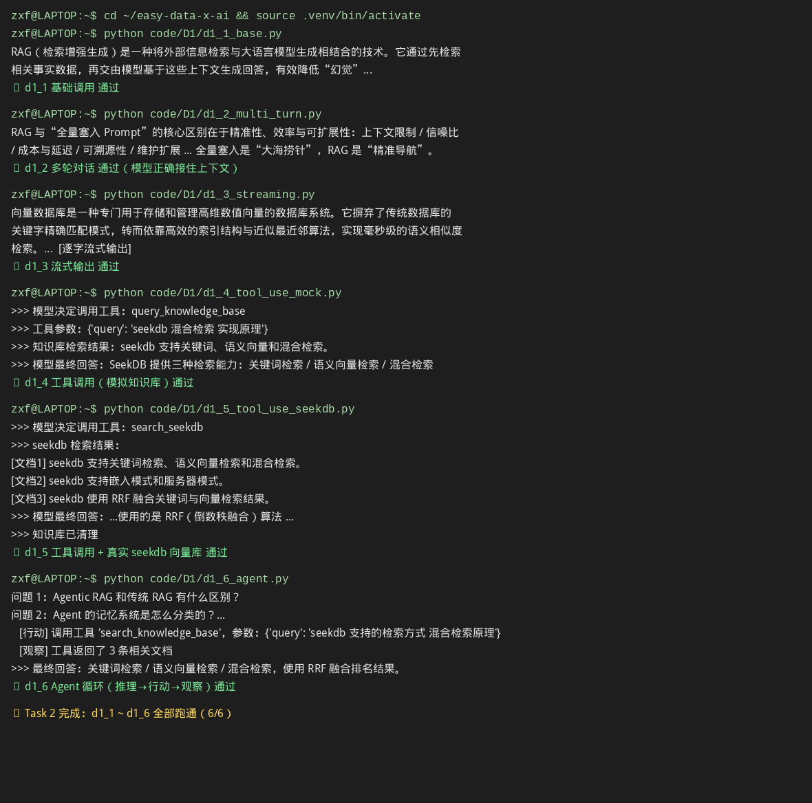

场景识别与 RAG 产品设计
配好测试 API Key、装好 pyseekdb，并把 code/D1 的六个示例全部跑通，走完从一次调用到 Agent 循环的演进。
任务要求
获取测试用 API Key；安装向量数据库 pyseekdb 的 SDK；跑通 code/D1 的 d1_1 至 d1_6 示例代码。
- P1 找准 Agent 的用武之地
- D1 让 Agent 会查资料
- I1 AI 原生数据系统
实践成果与笔记
⏰ 截止时间：2026-09-20 03:00 📖 产品篇 P1《AI Agent 场景识别》+ 开发者篇 D1《大模型 API 工程化基础》+ 产业应用篇 I1《AI 原生数据库基础》
01 实践成果
环境与 Key
| 项目 | 结果 |
|---|---|
| 测试 API Key | ✅ 阿里云 DashScope（OpenAI 兼容端点） |
| 模型 | qwen3.7-flash-2026-07-15（用完后切 qwen3.7-flash） |
| pyseekdb SDK | ✅ 已安装（v1.4.0.post1） |
| code/D1 示例 | ✅ d1_1 ~ d1_6 全部跑通（6/6） |
实测截图：

截图内容为六个脚本的真实原始终端输出（非人工整理）。
真实输出摘录
d1_1（基础调用）
$ python code/D1/d1_1_base.py
RAG（检索增强生成）是一种将外部知识库检索与大语言模型生成相结合的技术，通过先查找相关
事实再生成回答，有效提升模型的准确性、时效性并减少"幻觉"。d1_4（工具调用 · 模拟知识库）— 模型自主决定调用工具，还会追问式重试 3 次
>>> 用户提问：seekdb 支持哪些检索方式？混合检索是怎么实现的？
>>> 模型决定调用工具：query_knowledge_base
>>> 工具参数：{'query': 'SeekDB 支持的检索方式 混合检索实现原理'}
>>> 知识库检索结果：
seekdb 支持关键词、语义向量和混合检索。
...
>>> 模型最终回答：...目前的知识库记录中未包含底层的打分算法（如 RRF、线性加权公式等）
的详细技术文档。但从功能支持角度来看，混合检索是...将两份结果进行融合排序...d1_5（工具调用 · 真实 seekdb 向量库）
>>> 模型决定调用工具：search_seekdb
>>> 工具参数：{'query': 'seekdb 支持的检索方式 混合检索实现原理'}
>>> seekdb 检索结果：
[文档1] seekdb 支持关键词检索、语义向量检索和混合检索。
[文档2] seekdb 支持嵌入模式和服务器模式。
[文档3] seekdb 使用 RRF 融合关键词与向量检索结果。
>>> 模型最终回答：...seekdb 采用 RRF (Reciprocal Rank Fusion) 算法...
>>> 知识库已清理d1_6（Agent 循环）— 出现完整的 [行动]→[观察]→回答
问题 1：Agentic RAG 和传统 RAG 有什么区别？
[行动] 调用工具 'search_knowledge_base'，参数：{'query': 'Agentic RAG 和传统 RAG 的区别'}
[观察] 工具返回了 3 条相关文档
Agentic RAG（代理式检索增强生成）与传统 RAG 的主要区别在于自动化程度、决策能力...怎么理解"跑通"？
code/D1/d1_1 ~ d1_6 是课程给出的六个递进式示例脚本，不是要你从零写代码，而是：
- 读懂每个脚本在演示什么（从一次调用 → 多轮 → 流式 → 绑工具 → 接真向量库 → Agent 循环）
- 亲手跑一遍，看真实输出（
python code/D1/d1_1_base.py依次到d1_6_agent.py） - 改一改（可选）比如换个模型名、改问题，观察输出变化
课程设计的意图是让你通过"运行"来建立直觉——同一件事（问 seekdb 怎么检索），在六个脚本里的实现方式逐级变复杂，能力也逐级变强。
六个示例跑通记录
| 示例 | 体验内容 | 结果 |
|---|---|---|
d1_1_base.py | 最基础的一次大模型调用 | ✅ |
d1_2_multi_turn.py | 多轮对话，模型接住上下文 | ✅ |
d1_3_streaming.py | 流式输出，逐字返回 | ✅ |
d1_4_tool_use_mock.py | 工具调用（模拟知识库） | ✅ |
d1_5_tool_use_seekdb.py | 工具调用 + 真实 seekdb 向量库 | ✅ |
d1_6_agent.py | Agent 循环：推理→行动→观察 | ✅ |
运行方式（复现）：
cd ~/easy-data-x-ai && source .venv/bin/activate
python code/D1/d1_1_base.py # 依次跑到 d1_6_agent.py02 学习心得（张博本人理解）
关于 D1
d1_4 那次模型连着查了三遍，代码里没写重试，是它自己觉得没查到。我觉得这就是 Agent 和普通调用的分界，不是会不会用工具，是它自己判断要不要再用一次。
d1_5 接的是真库，输出里那三条文档是真读出来的。跟前面几个例子比，最大的不同是它说的话有出处，不是自己想出来的。
关于 I1
这篇一开始没看懂。后来抓到一句就通了：模型负责想，数据库负责记住。I1 讲的就是给 Agent 配什么数据库。
几个之前没意识到的事：
一条数据不是一种形态。同一条记录，要能精确查（谁的、什么状态、有没有权限），也要能语义搜（向量），还要能关键词搜。三个是一起的，不是三选一。
混合检索里那个 RRF，说的是向量分数和关键词分数不是一个东西，直接加没意义，所以干脆比排名，谁排第几。
调模型的顺序也有讲究：先过滤、再召回、最后才调模型。因为模型又慢又贵，能少调就少调。
还有 Fork/Diff/Merge 这个概念，Agent 要改数据不能直接改，先开个沙箱折腾，看清楚了再决定合不合。跟 git 一个路子。
📖 引用来源
- 课程仓库：https://github.com/datawhalechina/easy-data-x-ai
- 开发者篇 D1：
docs/dev/D1 课程稿：大模型 API 工程化基础.md